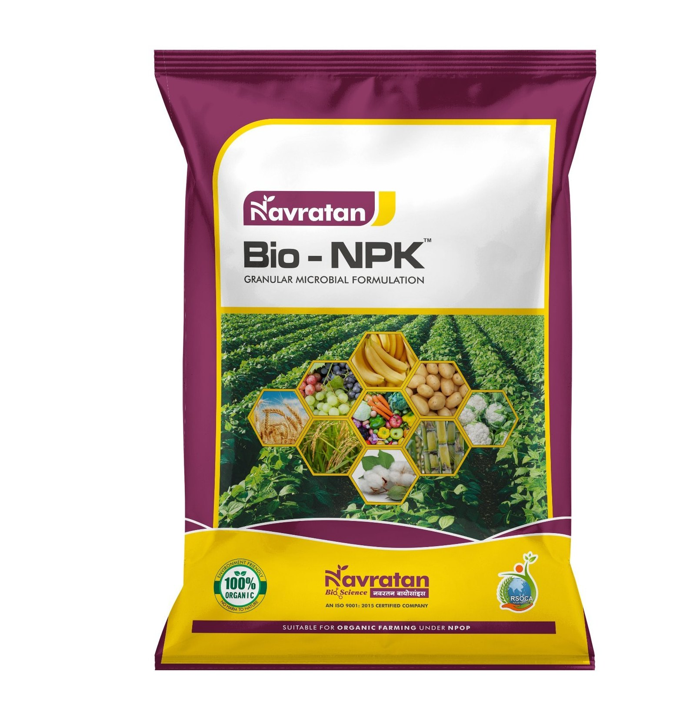
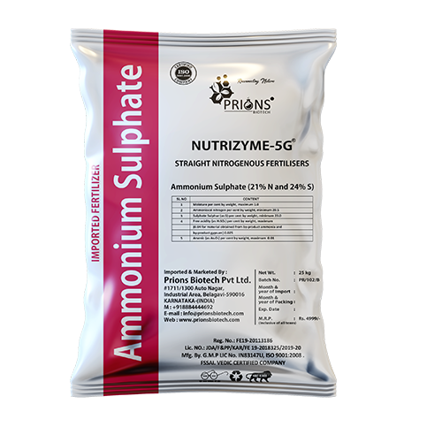

About Us
Welcome to Sri Lakshmi Fertilizers and Pesticides! We provide high-quality fertilizers and pesticides to enhance your agricultural yield. Our products are sourced from trusted manufacturers to ensure your crops get the best care.
Products
Nitrogen, phosphorus, and potassium: These are primary macronutrients that plants need in larger amounts. Mung beans Blueberries
Urea: Urea is a fertilizer that can be used for many crops: Potatoes Wheat Vegetables Soybeans Rice

Ammonium sulfate: Ammonium sulfate is a fertilizer that can be used for many crops: Rice Vegetables Fruits
Contact Us
Owner: Miduturi Venkata Govardhan Reddy
Shop Address: [Betamcherla, Main Road, Nandyala Dist]
Phone: +91-9676710992
Email: srilaksmifandp@gmail.com